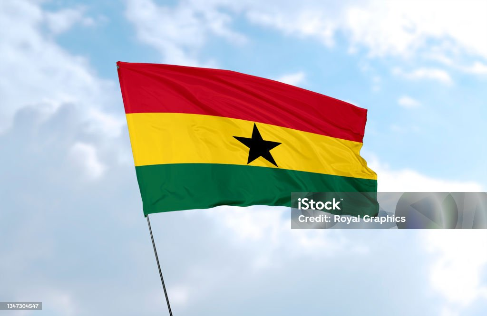

Honu David Kwablah
About Me
My name is Honu David Kwablah. I was born and raised in Ghana. I am twenty years of age, a student of BYU Idaho and also an apprentince in air-conditioning and refrigeration. I am somebody who likes to experience new things and have fun with technology. I developed the desire to pursue software development as my major just so I could assist people and society in real life. Outside of school and work, I enjoy playing soccer, listening to music, and spending time with family and friends. I also like exploring new places for fun.
Accra, Ghana

Ghana is a country located in the west coast of Africa. It was first known as the gold coast. Ghana has a population of about thirty five million. We share borders with countries like Ivory Coast, Burkina Faso and Togo. Our neighbouring have been a great contribution to our greatness today which we will always respect them for.